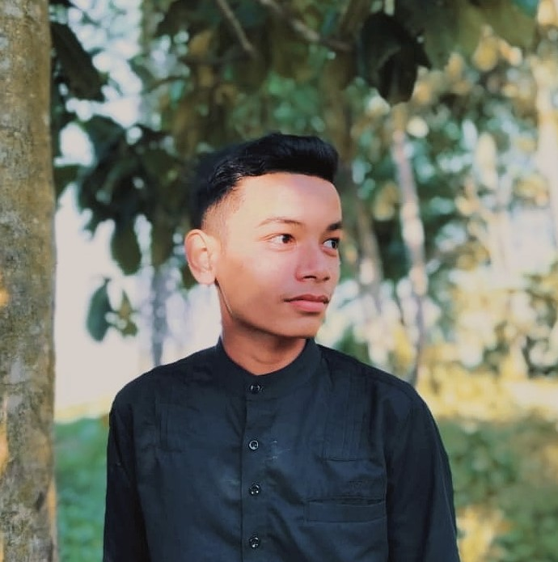
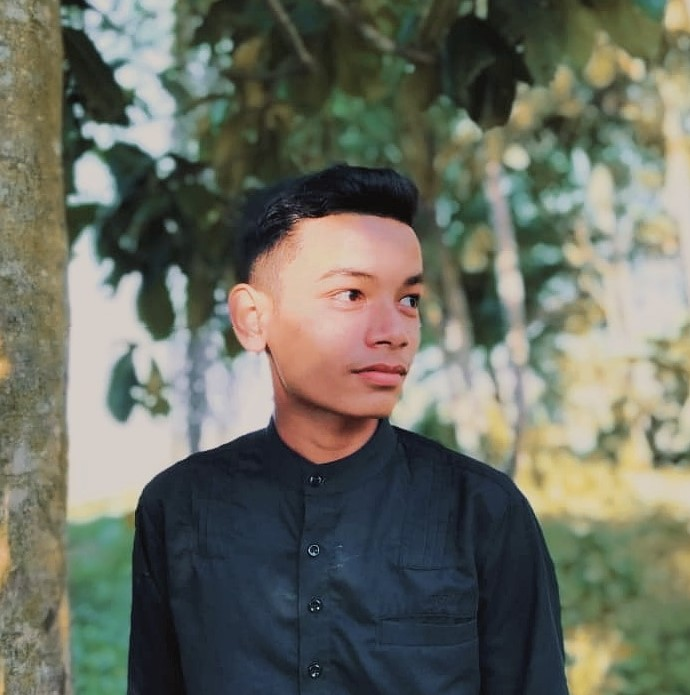

This is my family. I have three siblings and im the eldest one.
My father's name is Anuar bin Mat Lega. He's 48 years old and working as sawmill assistant. My mom's name is Nurmala binti Mohd Nor.
She's a housewife and she's 42 years old this year.
My sister's name is Nur Aieyn Nadirah and she's currently study at UiTM Jengka, Pahang
My youngest brother's name is Muhammad Farieddin. He's 17 years old and school at SMK Seri Bukit Puteri.
My family's favourite dishes:
 
